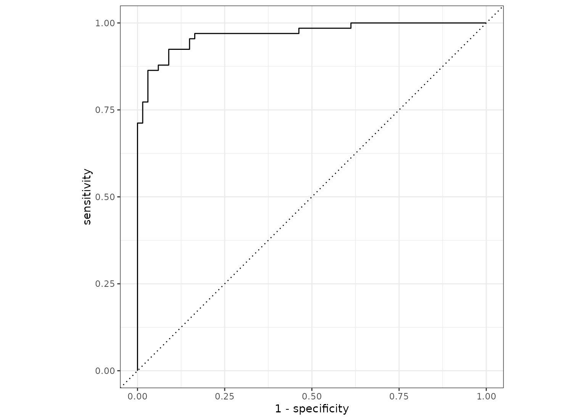

Predict from a brulee_logistic_reg
# S3 method for brulee_logistic_reg
predict(object, new_data, type = NULL, epoch = NULL, ...)A brulee_logistic_reg object.
A data frame or matrix of new predictors.
A single character. The type of predictions to generate. Valid options are:
"class" for hard class predictions
"prob" for soft class predictions (i.e., class probabilities)
An integer for the epoch to make predictions. If this value
is larger than the maximum number that was fit, a warning is issued and the
parameters from the last epoch are used. If left NULL, the epoch
associated with the smallest loss is used.
Not used, but required for extensibility.
A tibble of predictions. The number of rows in the tibble is guaranteed
to be the same as the number of rows in new_data.
if (torch::torch_is_installed()) {
library(recipes)
library(yardstick)
data(penguins, package = "modeldata")
penguins <- penguins %>% na.omit()
set.seed(122)
in_train <- sample(1:nrow(penguins), 200)
penguins_train <- penguins[ in_train,]
penguins_test <- penguins[-in_train,]
rec <- recipe(sex ~ ., data = penguins_train) %>%
step_dummy(all_nominal_predictors()) %>%
step_normalize(all_numeric_predictors())
set.seed(3)
fit <- brulee_logistic_reg(rec, data = penguins_train, epochs = 5)
fit
predict(fit, penguins_test)
predict(fit, penguins_test, type = "prob") %>%
bind_cols(penguins_test) %>%
roc_curve(sex, .pred_female) %>%
autoplot()
}
